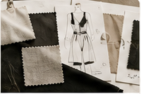

Export Strategy
Market entry planning, international expansion logic and go-to-market priorities.
I combine international marketing, export management and sustainability to design business strategies that create long-term value.
View Selected WorkAustralian market-entry strategy and export planning for international growth.
Green Fashion, ethics and responsible business projects with certified learning.

Fashion education, luxury management and industry insight for brand strategy.
Marketing simulation, strategic decision-making and performance analysis.
Market entry planning, international expansion logic and go-to-market priorities.
Responsible fashion, transparency, impact thinking and sustainable growth strategy.
Consumer insight, foreign market evaluation and opportunity assessment.
Event planning, provider coordination and organized execution across teams.
CV available as a PDF while the full project case studies are being prepared for this GitHub portfolio.